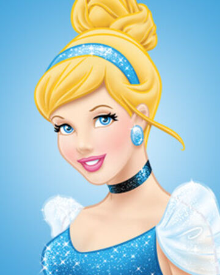

Hello, my name is Cinderella. I was born to wealthy, unnamed parents who treated me with great love. We lived in a French château, just beyond a small but powerful kingdom. However, my mother passed away, and it was the saddest moment of my life. My dad thought that I would need a mother figure, so he decided to remarry with Lady Tremaine. I became to have two siblings: Anastasia and Drizella. However, tragically my father died as well, and I had to be under the control of Lady Tremaine, whose true colours finally surfaced, showing a cruel and cold-hearted woman. Even though my stepmom and two siblings are mean sometimes, I tried my best to keep the family.
However, my life flipped upside down because of the ball event. I desperately wanted to join the ball, but my sisters messed up my dress and jewel, but my lovely mice friends, jap and Gus, and Fairy Godmother helped me attend the ball. And then I met my soulmate, which is Prince Charming. He was the shinest man off the ball, and it was such a magical time for me to dance with him. Nevertheless, the magic was not eternal; I had to leave the place when I saw the times almost midnight. Miracle again happened. I accidentally left my glass heels on a stairway while running away, and the prince found me. Now I am happily living with my husband, and this wonderful time will be forever.